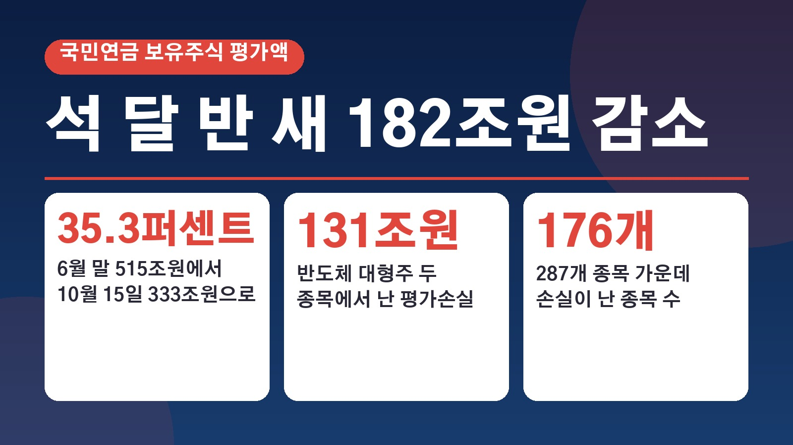
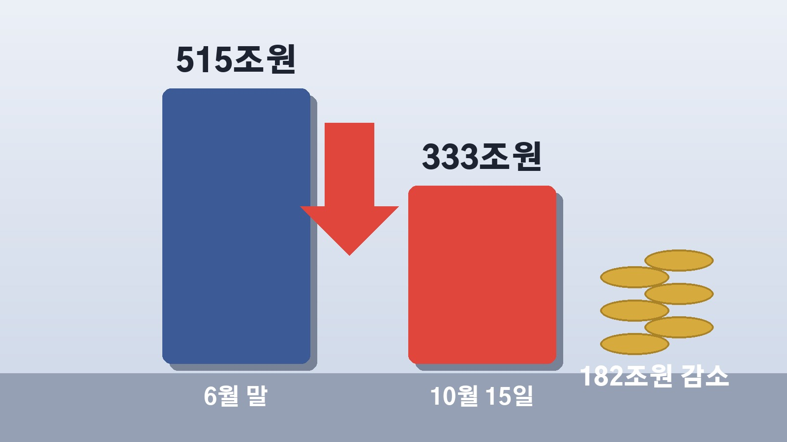
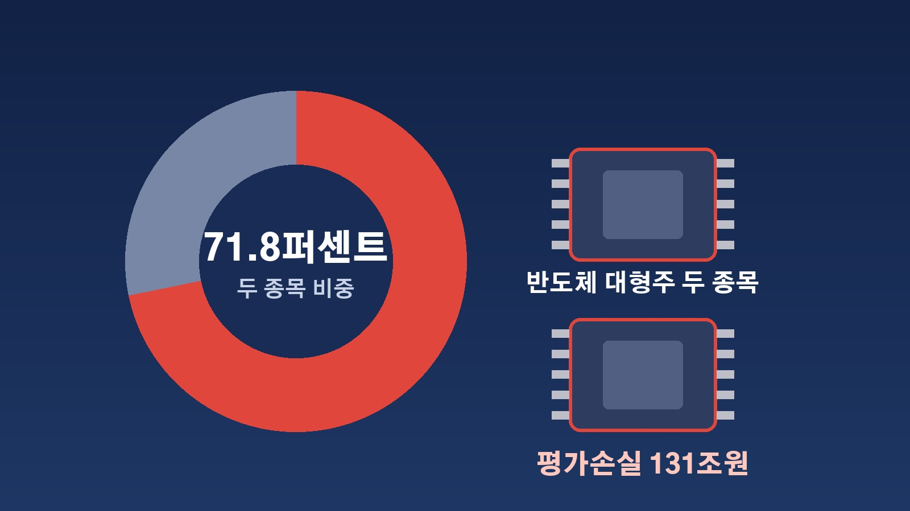

국민연금 보유주식 석 달 반 새 182조원 감소, 삼성전자와 SK하이닉스에서만 131조원 빠졌다

요즘 주가가 크게 흔들리면서 내 계좌만큼이나 국민연금은 괜찮은지 궁금해하시는 분들이 많더라고요. 마침 국민연금이 큰 지분을 가진 상장사들의 주식 가치가 석 달 반 사이 182조원 넘게 줄었다는 집계가 나왔어요. 이 숫자가 정확히 무엇을 센 것인지, 어디서 손실이 컸고 어디서는 오히려 이익이 났는지 하나씩 정리해 볼게요.
182조원이라는 숫자는 어떤 기준으로 나왔나
금융정보업체 에프앤가이드 자료에 따르면 국민연금이 6월 30일과 10월 15일 기준으로 지분 5퍼센트 이상을 보유했다고 공시한 상장사는 287곳이에요. 이 종목들의 주식 평가액은 10월 15일 기준 약 333조5330억원으로 추정됐습니다.
6월 말에는 같은 종목들의 평가액이 515조9293억원이었어요. 석 달 반 만에 182조3963억원, 비율로는 35.3퍼센트가 줄어든 셈입니다. 여기서 짚어 둘 점은 이 숫자가 국민연금 전체 기금이 아니라 지분 5퍼센트 이상을 공시한 종목만 모아 계산한 추정치라는 거예요. 또 주식을 실제로 팔아서 확정된 손해가 아니라 주가가 내려가 평가액이 줄어든 평가손실이라는 점도 함께 보시면 좋겠습니다.
삼성전자와 SK하이닉스, 두 종목이 손실의 71.8퍼센트
손실 대부분은 증시 대장주 두 곳에서 나왔어요. SK하이닉스에서 74조2261억원, 삼성전자에서 56조8710억원의 평가손실이 생겨 두 종목만 합쳐 131조971억원입니다. 전체 감소액의 71.8퍼센트에 해당해요.

같은 기간 SK하이닉스 주가는 265만원에서 126만2000원으로, 삼성전자는 33만4000원에서 21만원으로 내려갔어요. 국민연금은 10월 15일 기준 삼성전자 지분 7.84퍼센트, SK하이닉스 지분 7.32퍼센트를 갖고 있습니다. 이 밖에 SK스퀘어에서 10조8698억원, 삼성전기에서 7조5914억원이 줄었고, 287개 종목 가운데 176개 종목에서 손실이 났어요.
직전 분기 189조원 수익, 한 분기 만에 반납
분기 단위로 국민연금 보유주식 평가액이 마이너스를 낸 건 2024년 4분기 이후 7분기 만이에요. 손실 규모는 역대 최대 수준으로 추산되고 있습니다.
바로 앞선 4월 1일부터 7월 6일까지 국민연금은 약 189조원의 평가이익을 냈었어요. 당시 큰 수익을 이끌었던 종목이 바로 삼성전자와 SK하이닉스였는데, 이번에는 같은 두 종목이 하락하면서 쌓아 둔 이익의 상당 부분을 한 분기 만에 돌려준 모양새가 됐습니다.
오히려 이익이 난 종목도 있었다
모든 종목이 떨어진 건 아니에요. SK이노베이션은 국민연금이 지분을 6.03퍼센트에서 7.14퍼센트로 늘리는 동안 주가가 9만4900원에서 15만5000원으로 올라 9041억원의 평가이익을 냈습니다.

그다음으로 에쓰오일이 7107억원, LG에너지솔루션이 5808억원, 한화솔루션이 4347억원의 평가이익을 기록했어요.
국민연금이 지분을 늘리고 줄인 종목
이번 집계에서는 국민연금이 어떤 종목을 더 담고 덜어냈는지도 드러났어요. 지분을 늘린 종목은 84개로, 그중 코스닥 종목은 파마리서치와 RF머티리얼즈, 두산테스나 등 7개였습니다. 지분을 줄인 종목은 82개였고 그중 코스닥 기업이 21개였어요.
새로 지분 5퍼센트 이상을 확보한 종목은 자이에스앤디, 파마리서치, DN오토모티브, 한화솔루션, 고려아연 등 17개예요. 반대로 LG디스플레이와 글로벌텍스프리, 한스바이오메드 등 13개 종목은 지분이 5퍼센트 아래로 내려갔습니다. 지분을 크게 늘린 곳으로는 GS건설이 7.82퍼센트에서 12.88퍼센트로, 현대해상이 9.42퍼센트에서 12.37퍼센트로, 빙그레가 6.47퍼센트에서 9.37퍼센트로 올랐어요. 파라다이스는 12.33퍼센트에서 8.39퍼센트로, 삼성바이오로직스는 10.27퍼센트에서 6.56퍼센트로 크게 낮아졌습니다.
정리하면 182조원은 국민연금이 지분 5퍼센트 이상을 가진 287개 종목을 10월 15일 주가로 계산한 추정치이고, 그 가운데 약 72퍼센트가 삼성전자와 SK하이닉스 두 종목에서 나왔다는 이야기예요.
참고한 기사: KBS 국내 증시 폭락에 국민연금 휘청, 3분기 182조 원 손실(2026.10.18), 조선일보 국민연금, 3분기 182조원 손실 7분기 만에 마이너스(2026.10.18), 전자신문 국민연금 보유주식 182조원 증발(2026.10.18), 문화일보 100일만 182조 날린 연금(2026.10.18)
태그
국민연금 국민연금손실 국민연금수익률 삼성전자 SK하이닉스 평가손실 에프앤가이드 코스피 증시급락 노후자금